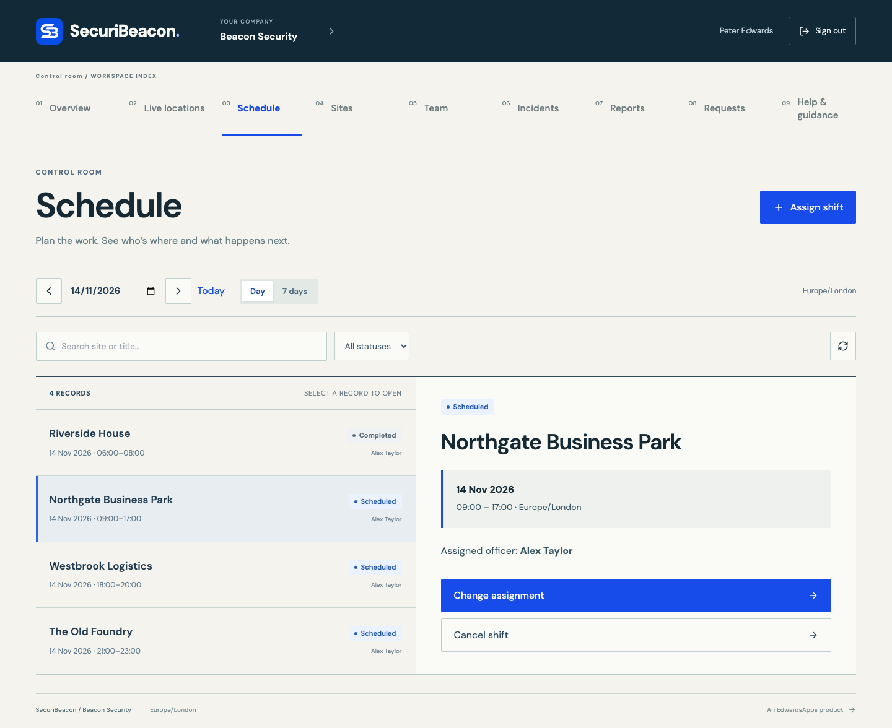
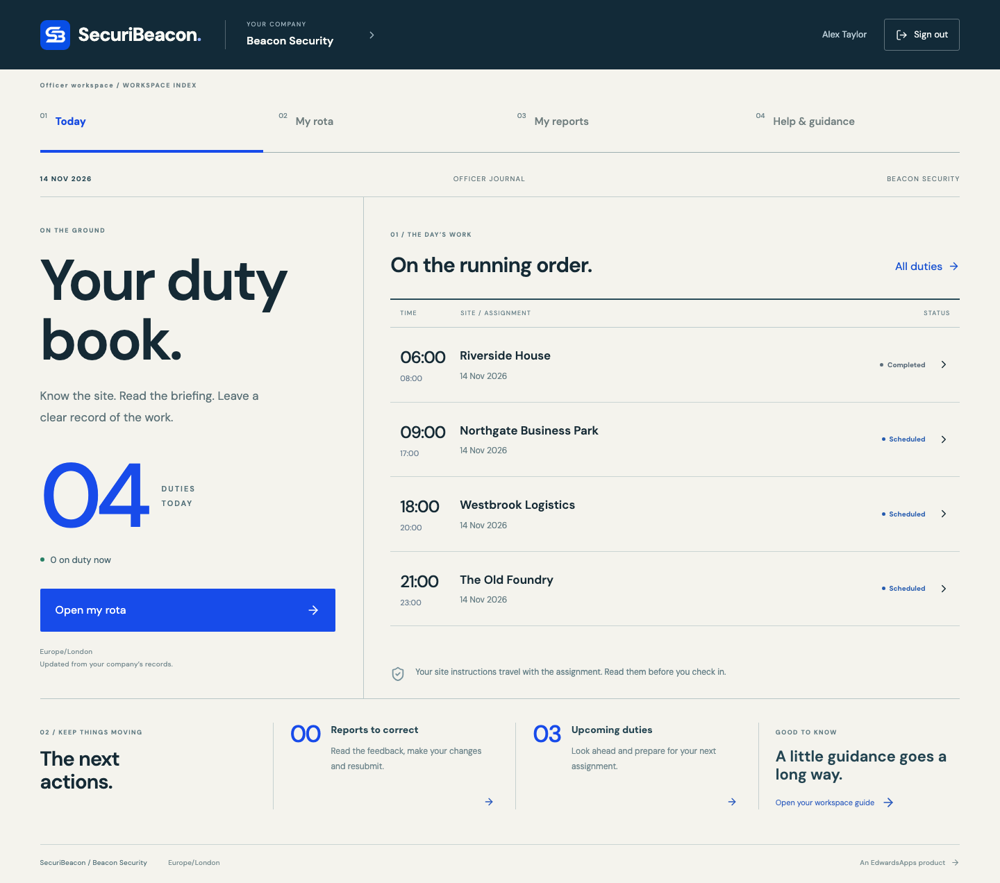
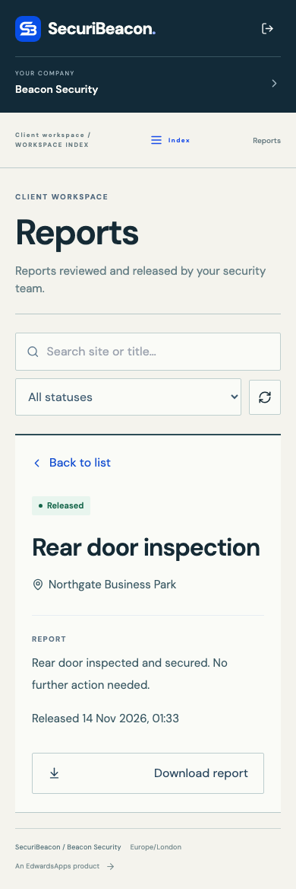

What SecuriBeacon is#
SecuriBeacon connects the three groups of people in a security operation, and gives each of them their own workspace:
- The control room sets up sites, assigns shifts to officers, follows the day's duties, and reviews every report before a client sees it.
- Officers see the shifts assigned to them, check in on site, can share their location with the control room while on duty, and write patrol and incident reports.
- Clients see their own sites, the visits to them, and the reports the control room has chosen to release — and can raise requests.
The work moves along one line: the control room assigns a shift, the officer records what happened, the control room reviews the report and prepares the version the client should read, and that version is shared in the client's workspace. Nothing an officer writes reaches a client until someone in the control room has released it.

This guide covers SecuriBeacon on the web, which is ready to use now in any modern browser on a computer, tablet or phone — there is nothing to install. The iPhone, iPad and Android apps are coming to the App Store and Google Play and use the same account; see The phone apps.
Creating your account and signing in#
Everyone has their own personal login — officers, control room staff and clients alike. There are three ways in: Continue with Google, Continue with Apple, or an email address and password. Your login is the same on the web and, when they arrive, in the phone apps.
Registering with an email address#
- Go to securibeacon.base44.app and click Sign in at the top of the page, then Create one under the sign-in form.
- On the Create your account page, enter your Email, Password and Confirm password, then click Create account.
- Type the 6-digit code from the email you've been sent. Didn't get it? Click Resend — and check your spam folder.
- Click Verify — you're signed in and taken to your workspaces.
With Google or Apple there is no code step: click the button, choose your account, and you're in.
Signing in and out#
Click Sign in on the SecuriBeacon home page and the Welcome back page appears: use Continue with Google, Continue with Apple, or type your email and password and click Log in. You land on the page that lists your workspaces.
To sign out, click Sign out at the top right of any page (on a phone it is the arrow icon at the top right). There is also a Log out button on the Settings page.
Forgotten your password?#
- On the sign-in page, click Forgot password?.
- Enter your Email address and click Send reset link, then check your inbox.
- Open the link, fill in New password and Confirm password, and click Reset password. Sign in with the new password.
If something's not right#
"Invalid email or password" when logging in
Re-type both carefully, or click Forgot password? to set a new one. If you originally signed up with Google or Apple, use that button instead — there's no password on the account.
"Passwords do not match"
The two password boxes hold different text.
Clear both and type the password again in each, exactly the same.
"Invalid verification code" when registering
The code was mistyped, or an older code was entered after a new one was requested.
Use the code from the most recent email, or click Resend for a fresh one.
No password-reset email arrives
The page shows the same message whether or not the address has an account — "If an account exists with that email, you'll receive a password reset link shortly." — so a typo, a Google or Apple account, or a spam filter all look the same.
Check spam, confirm you typed the address you registered with, and remember Google and Apple sign-ins don't have a SecuriBeacon password.
"Invalid reset link" or "Failed to reset password"
The link was cut short by email software, has expired, or was already used.
Click Request a new link and use the fresh email — copy the whole link into the address bar if clicking doesn't work.
You signed in but you're looking at the public home page
You reached the sign-in page directly — for example straight after resetting your password — so there was no page to return you to.
Click Sign in at the top of the home page — you're already signed in, so it takes you straight to your workspaces.
Setting up your company and subscribing#
Everything in SecuriBeacon belongs to a company, and each company sees only its own sites, shifts, people and reports. The first person from a security business sets the company up and becomes its Owner; everyone else — staff and clients — is added to it afterwards and never needs to create one.
One subscription covers the whole company: £29 per company per month, including VAT. It covers your officers, control room staff and clients, with no per-user charges. It is billed monthly until you cancel, and there is no free trial — the workspaces open once payment is confirmed.
Creating the company (first person only)#
- Create your account and sign in.
- Open the Company subscription page. From the SecuriBeacon product page, choose Set up your company. Inside the app, click the settings cog at the top of the page, then Manage company subscription.
- Under Set up a new company, type your business name in Company name and click Create company. This step does not take payment. The page now shows your company, with you as its owner.
Subscribing#
- On the Company subscription page, check the right company is chosen in the Company list, then click Subscribe — £29/month inc VAT.
- Complete the secure checkout page you're taken to. Payment is handled by Stripe, which shows the VAT included before you pay. Your card details never reach SecuriBeacon.
- You return to the Company subscription page. For a few moments it says it is checking payment confirmation, and it keeps checking by itself. When it reads "Your company subscription is active." you're done.
- Click the SecuriBeacon name at the top left to go to your workspaces, and open your Control room.
The product page also offers subscribing in the iPhone app. That app is coming to the App Store; the price and what it covers are the same.
Invoices, payment details and cancelling#
Open Settings → Manage company subscription. The page shows where things stand and, once you have paid, a line such as "Paid access through 14 December 2026."
| The page says | What it means |
|---|---|
| Your company subscription is active. | Everything is in order. It renews monthly. |
| Renewal cancelled. Your company still has access until the paid period ends. | You've cancelled. Everyone can keep working until the date shown, then the workspaces close. |
| Payment is overdue. Update your payment details to restore access. | A renewal payment failed. Use Manage subscription to update the card. |
| Payment is awaiting completion. Manage your subscription before trying to pay again. | A payment was started but not finished. Use Manage subscription rather than subscribing a second time. |
| No active paid subscription. | The company exists but nobody has subscribed yet, or the subscription has ended. |
- Manage subscription opens Stripe's secure billing page, where you can see invoices, change payment details and cancel renewal. Cancel at any time; access continues to the end of the period you've paid for.
- Check payment status asks again straight away, if you don't want to wait for the page to update itself.
Only the company's owner and administrators can subscribe or manage billing. Everyone else sees a note asking them to speak to the owner or administrator.
If something's not right#
The page keeps saying it is checking payment confirmation
Access starts when the payment itself is confirmed, which can lag a little behind your return from the checkout. Coming back from the checkout page does not switch it on by itself.
Give it a minute, then click Check payment status. Don't pay a second time. If it still isn't active after a few minutes, email Peter.
"This company already has a subscription or payment in progress. Use Manage subscription instead."
A subscription, or a half-finished payment, already exists for this company.
Click Manage subscription to see it and finish or fix the payment there.
The page says to "ask its owner or administrator to manage the subscription"
You aren't an owner or administrator of any company, so there is no subscription for you to manage.
If your company already uses SecuriBeacon, ask its owner to deal with billing. Only use Set up a new company if you really are starting a new, separate company.
"Payment is overdue. Update your payment details to restore access."
The monthly payment could not be taken — usually an expired or replaced card.
Click Manage subscription and update the payment details.
"Your subscription needs a support review."
Email peter@edwardsapps.co.uk with your company name. Don't try to pay again in the meantime.
The team can't open their workspaces after the subscription ended
Workspaces only open while the company's subscription is active. Without it, each person sees "This workspace is unavailable".
An owner or administrator subscribes again from Settings → Manage company subscription.
Choosing your workspace#
After signing in you see Where are you working today? — a list of every company you belong to, each with the workspace your role there allows: Control room, Officer or Client. Click one to open it.
- One account, several companies. If you work for more than one security company, or you're a client of more than one, they all appear here under the same login.
- Switching. Inside a workspace, click your company's name under YOUR COMPANY at the top of the page to come back to this list.
- Just been added? Click Refresh access to check again without signing out.
- Access is checked as you work. If your role changes or your access is suspended while you have a workspace open, it closes shortly afterwards.
If something's not right#
"No active company access yet"
No company has added the email address on this account, or your access there has been suspended.
The message shows the email address you're signed in with. Give that exact address to your company's owner or administrator and ask them to add you, then click Refresh access. If they added a different address, sign out and sign in with that one instead.
"We couldn’t load your workspaces"
Check your connection and click Try again. Your company access has not been changed.
You expected the Control room but only see Officer (or the other way round)
Each person has one role in a company, and the role decides the workspace.
Ask your company's owner or administrator to change your role — see Changing a role or suspending access.
Your team, clients and who sees what#
People are added to your company by email address, and the role you give them decides which workspace they get and what they can see. Only the company's owner and administrators can add people or change their access.
| Role | Workspace | What they see and do |
|---|---|---|
| Owner | Control room | Everything in the control room, plus adding people and managing the subscription. Given to the person who set the company up. |
| Company administrator | Control room | The same as the owner. |
| Supervisor | Control room | Sites, the schedule, live locations, reports, incidents and requests. Cannot add people or manage the subscription. |
| Controller | Control room | The same as a supervisor. |
| Officer | Officer | Only their own shifts, with the site's address and instructions, and their own reports. |
| Client | Client | Only the sites you tick for them, the visits to those sites, the reports you release, and their own requests. |
Adding officers and control room staff#
- In the control room, open Team and click Add person.
- Enter their Name and the Email address they sign in to SecuriBeacon with, and choose a Company role: officer, controller or supervisor.
- Click Save.
What happens next depends on whether they already have a SecuriBeacon account:
- They already have an account with that address — they get access straight away and appear as Active.
- They haven't signed up yet — they're emailed an invitation and appear as Pending, with "Invited" and their email under their name. They get access as soon as they sign up with that address.
Adding clients and choosing their sites#
- Open Clients and click Add client.
- Enter their Name and Email address, and click Save.
- Open the client from the list and click Choose sites.
- Tick the sites under Sites they can see and click Save.
A client sees nothing until you've ticked at least one site. You can choose sites for a client who is still pending, so everything is ready the moment they sign up. The same access can be set from the site's side: Sites → Edit site → Clients who can see this site.
Opening a client also shows Sites they can see and their Requests; opening an officer shows their Upcoming shifts and Reports, with an Assign shift button.
Changing a role or suspending access#
- Staff: open the person in Team and click Edit person. You can change their Name, their Company role, and set Access to active or suspended. Changes apply straight away. Changing a role replaces the old one; their shifts and reports are kept.
- Clients: open them in Clients and click Edit client. Suspending a client stops them seeing your sites until you set their access back to active.
- Invitations: open a pending person and click Cancel invitation, then Confirm. They won't get access to your company when they sign up. You can add them again later.
You can't edit your own access, or that of an owner or administrator, from these pages. The same list and Add person button also appear under Settings → Users & access.
If something's not right#
There's no Add person or Add client button
Only the company's owner and administrators can add people. Supervisors and controllers can look at Team and Clients but not change them.
Ask the owner to add the person.
"This person already has a membership."
That email address already belongs to someone in your company — possibly suspended, or under the other list (a client rather than staff, or the reverse).
Look for them in both Team and Clients, setting the status filter to Suspended if need be, and use Edit person or Edit client. If you need a client turned into a member of staff, or the reverse, email Peter.
"This person has already been added. They will get access as soon as they sign in…"
There is already a pending invitation for that address.
Nothing more is needed from you — ask them to sign up with that email address. To change their role first, cancel the invitation and add them again.
The person says no invitation email arrived
The email was filtered as spam, or could not be sent. Their access is held for them either way.
They don't need the email. Ask them to go to securibeacon.base44.app, click Sign in and create an account with the same address — their access appears as soon as they do.
They signed up with Apple but still see "No active company access yet"
They chose Apple's Hide My Email, so their account uses a private relay address, not the one you invited.
Ask them for the address shown on their "No active company access yet" screen and add that address instead.
A person has no Edit person button
Owners and administrators can't be edited from this page, you can't edit yourself, and a pending person can only have their invitation cancelled.
For a pending person, wait until they've signed up, or cancel and add them again with the right details.
A client has signed in but sees no sites or reports
No site is ticked for them, their sites have been archived, or no report for their sites has been released yet.
Open them in Clients and check Sites they can see; use Choose sites to tick the right ones. Reports appear to them only once released.
"The invitation could not be confirmed." on the Settings page
The invitation email from Invite a new user could not be sent.
Use Add person instead: it holds their access under that email address, and they can sign up at securibeacon.base44.app with or without an invitation email.
Finding your way around#
All three workspaces are laid out the same way, so what you learn in one applies in the others.
The top of the page and the index#
- The dark bar at the top shows your company's name under YOUR COMPANY (click it to change workspace), a cog that opens Settings, your name, and Sign out.
- The workspace index is the numbered row beneath it — for the control room: Overview, Live locations, Schedule, Sites, Team, Clients, Incidents, Reports, Requests and Help & guidance. Officers and clients have shorter indexes of their own.
- On a phone the index folds away: tap Index to open it, and tap a section to go there.
- The foot of the page shows your company and its time zone.
Lists and records#
Sites, shifts, people, reports and requests all work as a list on the left and the record you've opened on the right. On a phone the record takes over the screen; tap Back to list to return.
- Search — type in the search box above the list. Sites are searched by name and address, people by name, and shifts, reports and requests by site or title.
- Filter — the All statuses list narrows it to one status, such as Scheduled or Awaiting review.
- Refresh — lists update themselves about every 30 seconds. The round-arrows button beside the filter refreshes at once.
- Long lists — the heading shows how many records there are; click Load more records at the bottom to see the next batch.
- Linked records — a record shows what it belongs to (its Site, Officer, Client or Shift) as buttons under the title, and lists of related records further down. Click any of them to open it.
- Addresses and phone numbers — an address has an Open directions link that opens it in Google Maps, and a contact telephone number can be tapped to call it.
Forms and saving#
Every action — adding a site, assigning a shift, submitting a report — opens a small form over the page. Fill it in and click Save (or Confirm, where there is nothing to fill in); Cancel closes it without changing anything. A green bar then confirms "Saved. Your workspace is up to date."
Help & guidance#
The last entry in every index, Help & guidance, is a one-page reminder for the workspace you're in: four short cards on getting started with your role.
If something's not right#
"We couldn’t refresh this view"
The page couldn't reach the service, or your access changed while it was open.
Check your connection and click Try again. Your company access is checked again at the same time.
"This record has changed. Refresh before continuing." or "Someone changed this record. Refresh and review their changes first."
Somebody else changed the same record after you opened it — for example a colleague released the report or edited the site while your form was open. Your change was not saved, so nothing of theirs was overwritten.
Click Cancel, refresh the list, open the record again and look at what changed before repeating your action.
"Nothing here yet" or "No matching records"
"Nothing here yet" means the list is empty for what you're looking at. "No matching records" means your search text or status filter is hiding everything.
Clear the search box and set the filter back to All statuses. On a schedule, also check the date — see A shift isn't in the list.
"This action could not be saved. Refresh before trying again."
The connection dropped, or the service didn't answer in time. Occasionally the change was saved but the confirmation never reached you.
Close the form, refresh the list and look for your change before trying again.
The control room Overview#
The control room opens on Overview — a single page that answers "what is happening today, and what needs me next?". It refreshes itself about every 30 seconds.
- Duties today — the large figure counts every shift that falls on today in your company's time zone, with a line beneath showing how many officers are on duty now. Open the schedule takes you to the full Schedule.
- On the running order — today's shifts in time order, each with its start and finish time, site, officer and status. Click a shift to open it. Only the first six are shown; All duties opens the rest.
- The next actions — Reports to review counts reports waiting for you and opens Reports; Open requests counts client requests waiting for a reply and opens Requests. The last tile, Keep the briefing current., opens Sites so you can check instructions and contacts before the next duty.
On a brand-new company the running order reads "Space in the day": add a site first, then assign your first shift.
Sites#
A site is a place you look after. It holds the address, the instructions your officers need, a contact, the clients allowed to see it, and — if you want arrivals checked — its position on the map. Every shift, report and request belongs to a site.
Adding a site#
- Open Sites and click Add site.
- Enter the Site name and Address. These two are required.
- Add Officer instructions — access arrangements, patrol points, what to look out for. Instructions are internal. They travel with the shift to the assigned officer; clients never see them.
- Under Clients who can see this site, tick the clients who should see it. You can leave this for later, or do it from the client's side with Choose sites.
- Optionally set the site location and boundary, a Site contact and a Contact telephone.
- Click Save.
The site pin and arrival boundary#
Give a site a pin and a boundary, and each officer's check-in and departure is compared against it. Without one, check-ins still work — they are simply marked "Site boundary not configured".
- In the site form, find Site location & boundary and click Set site location. A map appears.
- Place the pin on the site's entrance in any of three ways: click the map; type the Latitude and Longitude; or, if you are standing at the entrance, click Use my current location.
- Set the Boundary radius (metres) — the circle on the map. It starts at 100 and can be anything from 25 to 2,000. Make it large enough to cover the whole site, plus a little for the normal wobble of phone GPS.
- Check the pin carefully, then click Save.
To stop checking arrivals at a site, edit it and click Remove site pin.
When an officer captures their location at check-in or departure, the shift records one of these results, which you see on the shift under Arrival location and Departure location:
| Result | What it means |
|---|---|
| Within site boundary | The reading, allowing for its accuracy, is inside the circle. |
| Outside site boundary | The reading is clearly outside the circle. The officer had to give a reason. |
| Near boundary — accuracy overlaps | The reading is too close to the edge to call either way. The officer had to give a reason. |
| Low GPS accuracy | The phone could only place itself very roughly. The officer had to give a reason. |
| Site boundary not configured | The site has no pin, so there was nothing to compare against. |
| Location unavailable | No reading was captured. The officer gave a reason instead. |
A phone's GPS reading is supporting evidence, not proof of presence. Use it alongside the report and what you know of the site.
Opening, editing and archiving a site#
Click a site to open it. You see its address (with Open directions), instructions and contact, then Clients who can see this site, its Upcoming shifts, Reports and Requests — click any line to open that record.
- Assign shift — puts an officer on this site; see Assigning a shift.
- Edit site — change any of the details, the pin, or which clients can see it. Only the ticked clients can see the site and its released reports.
- Archive site — for a site you no longer cover. Archiving removes client access and prevents new shifts being assigned there. Finish or cancel its outstanding shifts first.
- Restore site — shown on an archived site. It brings the site back along with the client access it had. Find archived sites by setting the status filter to Archived.
If something's not right#
"Finish or cancel this site's outstanding shifts before archiving it."
The site still has shifts that are scheduled or on duty.
Open the site, look under Upcoming shifts, and cancel the scheduled ones (or wait for the officer on duty to finish). Then archive it.
"No clients yet. Add them under Clients first."
The site form can only offer clients who have been added to your company.
Save the site without clients, add the client under Clients, then tick the site for them.
A site is missing from the Assign shift list, or "This site is no longer active."
The site has been archived. Archived sites can't take new shifts.
In Sites, set the status filter to Archived, open the site and click Restore site.
The site form won't save after clicking Set site location
Once the location section is open, latitude, longitude and radius must all be filled in, and the radius must be between 25 and 2,000 metres.
Click the map to place the pin, or click Remove site pin to save the site without one.
"Location permission was declined." after clicking Use my current location
Your browser has been told not to share this device's location with SecuriBeacon.
Allow location for the site in your browser's settings and try again — or simply click the map to place the pin by hand.
"There are too many sites to change here. Use Edit site on each site instead."
Choose sites on a client can handle up to 200 active sites at once.
Set that client's access from each site instead: Sites → Edit site → Clients who can see this site.
The Schedule and assigning shifts#
Schedule is the rota: every shift, who is covering it, and where it has got to. A shift is one officer at one site between a start and an end time.


Assigning a shift#
- Open Schedule and click Assign shift.
- Choose the Site and the Officer.
- Set Starts (your local time) and Ends (your local time).
- Click Save.
You can start from the other end too: Assign shift on a site already knows the site, and Assign shift on an officer in Team already knows the officer.
- A shift must end after it starts and can last up to 48 hours. A night shift that runs past midnight appears on both days.
- An officer can't be given two shifts that overlap.
- Only active officers and active sites are offered.
- The shift appears in the officer's rota straight away, with the site's address, instructions and contact. There is no accept step — an assigned shift is theirs.
Moving around the dates#
The schedule shows one day at a time, starting on today. Use the arrow buttons either side of the date to step backwards and forwards, pick a date from the calendar box, or click Today to come back. Switch between Day and 7 days to see a single day or the week from that date. The search box and status filter work here as they do everywhere else.
Following a shift through#
| Status | What it means |
|---|---|
| Scheduled | Assigned, not yet started. It can still be changed or cancelled. |
| On duty | The officer has checked in. |
| Completed | The officer has finished the shift. |
| Cancelled | Cancelled by the control room before it started. |
Open a shift to see its date and times, the time the officer Checked in and Finished, and the Arrival location and Departure location recorded at each — the result, the GPS accuracy, the distance from the site pin, and any reason the officer gave. The Site and Officer buttons under the title open those records.
Changing or cancelling a shift#
- Change assignment — give a scheduled shift to a different officer, or change its start and end times.
- Cancel shift — click it, then Confirm. The shift stays on the schedule as Cancelled.
Both are offered only while a shift is Scheduled. Once the officer has checked in, the shift runs its course.
If something's not right#
"This officer already has an overlapping shift. Choose another officer or change the times."
The officer already has a scheduled or on-duty shift that covers some of the same time — at this site or another.
Pick a different officer, or adjust the times so the shifts don't overlap. To see what's in the way, open the officer in Team and look at Upcoming shifts.
"The shift must end after it starts and last no more than 48 hours."
Check the end date as well as the end time — a night shift ends on the next day. For cover longer than 48 hours, assign more than one shift.
"Enter valid dates and complete the required fields."
A start or end box is empty or only half filled in.
Fill in both the date and the time in each box, then save again.
There's no Change assignment or Cancel shift button — or "Only a scheduled shift can be changed."
The shift is already on duty, completed or cancelled.
A shift can only be changed before the officer checks in. If the wrong officer has checked in, ask them to finish the shift, then assign a new one.
An officer isn't in the Officer list
The list only offers people whose role is officer and whose access is active. Someone still pending, suspended, or added as a controller or supervisor won't appear.
Check them in Team. If they're pending, they need to sign up first; if their role is wrong, an owner or administrator can change it.
A shift isn't in the list
The schedule only shows the day (or seven days) on the date controls, and only the status in the filter.
Check the date, try 7 days, clear the search box, and set the filter to All statuses.
A shift shows at a different time from the one typed in
The form takes times in your device's local time; the schedule shows them in your company's time zone. If your device is set to a different time zone, the two differ.
Set your device to your company's time zone, then use Change assignment to correct the shift.
Live locations#
Live locations lists every officer who is checked in, and shows on a map the latest position of those who have chosen to share it. Officers decide when to share; checking in does not start it. How sharing works from the officer's side — and exactly what is and isn't shared — is in Sharing your duty location.
- The summary line shows how many officers are sharing, out of how many are checked in.
- The map shows a blue dot for a fresh position and an amber dot for an approximate one. Grey circles are the boundaries of the sites those officers are at. Click a dot for the officer's name, site and GPS accuracy.
- The roster beneath lists each checked-in officer with their site, a state, the accuracy of the position, and when it was last received.
| State | What it means |
|---|---|
| Live | A position received in the last 90 seconds, accurate to 100 metres or better. |
| Approximate | A recent position, but the phone could only place itself to worse than 100 metres. |
| Waiting for GPS | The officer has started sharing; the first position hasn't arrived yet. |
| Stale — no current fix | The officer was sharing, but nothing has arrived for 90 seconds. The old position is no longer shown. |
| Not sharing | Checked in, but not sharing a location. |
The page refreshes every 15 seconds; Refresh locations does it at once. Only the latest position is ever shown — there is no trail of where an officer has been — and it disappears from the map after 90 seconds without an update.
If something's not right#
"No officers on duty"
Nobody is checked in at the moment. Officers appear here when they check in to an assigned shift.
If an officer is on site but not listed, they haven't checked in yet — see Checking in.
An officer is on duty but shows "Not sharing"
Sharing is optional and off until the officer starts it. On the web it also stops whenever they leave the page or lock their phone.
If your company expects officers to share on this duty, ask them to open SecuriBeacon and tap Share my location.
An officer shows "Stale — no current fix"
Nothing has arrived from their phone for 90 seconds — usually lost signal, a locked screen, or the app left in the background.
It normally clears by itself when they come back to the app. If it matters, call them.
Reviewing and releasing reports#
Every report an officer submits comes to the control room first. You read it, and then either send it back for correction or prepare the version the client should see and release it. Clients only ever see released versions.
| Status | What it means |
|---|---|
| Awaiting review | Submitted by the officer and waiting for the control room. |
| Needs correction | Returned to the officer with your feedback. It comes back as Awaiting review when they resubmit. |
| Released | A client version has been released to the site's clients. |
Reading a report#
Open Reports (or click Reports to review on the Overview) and click a report. You see its type and priority — for example "patrol · routine priority" — when it was written, and the Officer's report in full. Buttons under the title open the Site, the Officer and the Shift it was written on, where the check-in details are.
If the officer attached Photos and videos, they appear on the report, each with the time it was taken and, where the phone recorded it, the place — with a link to open that spot on a map.
Returning a report for correction#
- Open the report and click Return for correction.
- Under What needs changing?, tell the officer plainly what to fix or add.
- Click Save. The report becomes Needs correction. The officer sees your feedback, corrects the report and resubmits it; clients can't see any of this.
Releasing a report to the client#
- Open the report and click Review for client.
- The form opens with a copy of the officer's title and text in Client report title and Client report text. Edit that copy into what the client should read — remove internal or sensitive details, and tidy the wording.
- Click Save. The report becomes Released and appears at once in the workspace of every client ticked for that site.
The officer's original stays exactly as written and stays internal. After release, the control room sees both on the report: the Officer's report, and the version Released to clients with the time it was released.
Clients never see the officer's original text, your correction feedback, incident follow-up notes, photos and videos, or any check-in location details.
Downloading a report#
Download report saves a plain text copy to your device, headed with your company name, the report's title, site and date. In the control room and officer workspaces it contains the officer's report; in the client workspace it contains the released version.
If something's not right#
There's no Review for client or Return for correction button
Both are offered only while a report is Awaiting review. A report that has been returned is with the officer; a released report is finished.
For a returned report, wait for the officer to resubmit it.
A released report needs changing
The released version can't be edited or withdrawn from inside the app. That is deliberate: the client has a record that doesn't change under them.
If something has been released that must be corrected or removed, email peter@edwardsapps.co.uk with the report's title, site and date.
The client says they can't see a report you released
A client sees released reports only for sites ticked for them, and only while their access is active and the site isn't archived.
Open the report's site and check Clients who can see this site. Then ask the client to refresh their Reports page.
"The report could not be refreshed. Try again before downloading."
Before saving the file, the app fetches the report again to make sure the copy is current and you may still see it. That check failed.
Check your connection and click Download report again.
Incidents#
When an officer submits a report with the type incident, it appears in Reports like any other — and also in Incidents, which lists incident reports only, each showing its priority and follow-up status (for example "urgent · open").
An incident has two separate things to deal with:
- The report itself is reviewed, returned or released exactly as described in Reviewing and releasing reports — the same buttons appear here.
- The follow-up is your internal record of what was done about it.
Recording follow-up#
- Open the incident and click Update incident.
- Set the Incident status: open, investigating or resolved.
- Write what has been done in Follow-up and resolution.
- Click Save. Update it again as often as things move on.
The follow-up shows on the report as Incident follow-up, for the control room and the officer who wrote it. It is internal: it does not change the version released to clients, and clients never see it.
If something's not right#
A report about an incident isn't on the Incidents page
The officer submitted it with the type "patrol". The type is chosen when the report is first written and isn't changed by a correction.
Deal with it from Reports. If you need it tracked as an incident, ask the officer to submit a new report with the type "incident".
The status filter on Incidents doesn't offer open, investigating or resolved
The filter works on the report's status — Awaiting review, Needs correction or Released — not the follow-up status.
The follow-up status is shown on each line of the list, at the right-hand side.
Client requests#
Clients can raise a request against any of their sites — an extra visit, a question, a change to arrangements. Each one arrives in Requests as Open, and the Open requests tile on the Overview counts those still waiting.
- Open Requests and click a request to read it. The Site and Client buttons under the title open those records.
- Click Respond and close.
- Write your reply in Response to client and click Save.
The request becomes Closed, and the client sees your response, and when you sent it, on the request in their workspace. One reply closes a request; if there is more to discuss, the client raises a new one.
If the reply means extra work — an additional visit, say — remember to assign the shift as well. Replying doesn't create one.
If something's not right#
There's no Respond and close button
The request is already closed — a colleague has replied. The reply is shown on the request under Response.
A closed request can't be reopened or replied to again. If you need to add something, contact the client directly.
Officers: Today and My rota#
The officer workspace shows your work only: the shifts assigned to you and the reports you've written. It has four entries in its index — Today, My rota, My reports and Help & guidance — and works in the browser on your phone as well as on a computer.


Today#
- Duties today — how many shifts you have today, and whether you are on duty now.
- On the running order — today's shifts in time order, with the site and status. Tap one to open it.
- Reports to correct — reports the control room has sent back to you. See Correcting a returned report.
- Upcoming duties — how many scheduled shifts you have still to come.
My rota and opening a duty#
My rota (or Open my rota on Today) lists your shifts for the day on the date controls. Use the arrows or the calendar box to look ahead, 7 days to see a week at once, and Today to come back.
Tap a shift to open it. You see the date and times, the site's Address with Open directions, the Site instructions from your control room, and the Site contact with a telephone number you can tap to call. Read the instructions before you check in.
There is nothing to accept: a shift on your rota is assigned to you. If you can't cover it, tell your control room — only they can reassign or cancel it.
The buttons on a shift change as it moves along:
| Shift status | What you can do |
|---|---|
| Scheduled | Check in |
| On duty | Submit report and Finish shift |
| Completed | Submit report — you can still write up a shift after finishing it |
| Cancelled | Nothing — the control room has cancelled it |
If something's not right#
My rota says "Nothing here yet"
You have no shifts on the date shown. The rota opens on today.
Try another date or 7 days. If a shift you were told about isn't there, contact your control room — it may not have been assigned yet, or it was assigned to a different email address from the one you signed in with.
A shift that was on my rota has gone, or shows "This record is not available"
The control room has given it to another officer. Shifts they cancel stay on your rota, marked Cancelled.
Check with your control room if you weren't expecting the change.
I work for two companies and can only see one company's shifts
Each company has its own workspace, and you see one at a time.
Click the company name under YOUR COMPANY at the top to go back to the list and open the other company's Officer workspace.
Checking in and finishing a shift#
Checking in tells the control room you have arrived and puts the shift On duty. Finishing tells them you have left and marks it Completed. Each records the time and, if you capture it, where you were.
Checking in#
- Open the shift from Today or My rota and tap Check in.
- Tap Capture GPS location. The first time, your browser asks whether SecuriBeacon may use your location — allow it. Finding a position can take a few seconds; it works best outdoors or near a window.
- The result appears: where you are in relation to the site — for example "Within site boundary" — with the accuracy of the reading and your distance from the site pin. Not happy with it? Tap Capture again.
- If the reading is within the boundary — or the site has no boundary set — tap Confirm check-in.
- If the reading is outside or near the boundary, or its accuracy is low, a Reason for location exception box appears. Explain in a sentence (at least 10 characters) — for example that you are at the rear gate — then tap Confirm check-in.
No GPS at all? Tap Continue with a location exception instead of capturing, give your reason, and confirm. A missing GPS signal never stops you checking in.
Finishing the shift#
- Open the shift and tap Finish shift.
- Capture your location, or continue with an exception, exactly as at check-in.
- Tap Confirm departure.
Finishing a shift also ends any location sharing for it. Write your report before or after finishing — both work.
What is recorded, and who sees it#
- Recorded: the time, your position at that moment and its accuracy, how far you were from the site, and any reason you gave. It is kept with the shift as the record of your attendance.
- Seen by: you and your company's control room. Clients see that the visit was checked in and finished, and when — never your position or your reason.
- One reading only: capturing your location at check-in or departure takes a single reading. It does not start live sharing, and SecuriBeacon does not follow you during the shift unless you choose to share your duty location.
If something's not right#
"Location permission was declined. Allow it in your browser settings or record an exception."
Your browser, or your phone, has been told not to let SecuriBeacon use your location.
To check in now, tap Continue with a location exception and give the reason. To fix it for next time, allow location for your browser in your phone's settings, and for the SecuriBeacon site in the browser's own site settings.
"GPS timed out. Move to a clearer position and retry, or record an exception."
Your phone couldn't get a position within 15 seconds — common indoors, in basements and between tall buildings.
Step outside or to a window and tap Capture GPS location again. If it still fails, continue with a location exception.
"Your location could not be found." or "Location is unavailable on this device."
Location is switched off on the phone, or the device has no way of finding its position.
Turn on location in your phone's settings and try again, or continue with a location exception.
"Your GPS reading has expired. Capture a fresh location before saving."
More than two minutes passed between capturing your location and confirming.
Tap Capture again, then confirm straight away.
The Confirm button is greyed out, or "Add a reason of at least 10 characters for this location exception."
A reason is required whenever there is no reading, the accuracy is low, or the reading is outside or near the site boundary.
Type a short, real explanation of at least 10 characters. Your control room reads it.
It says "Outside site boundary" but I'm on site
The site's pin or boundary circle doesn't match where you're standing — a large site with a small circle, or a pin placed on the wrong entrance — or the phone's reading is off.
Tap Capture again once. If it still says outside, give the reason and confirm, and let your control room know so they can adjust the site's pin or radius.
There's no Check in button on the shift
The shift isn't Scheduled any more — you've already checked in, it's been completed, or the control room cancelled it.
Look at the status at the top of the shift. If it says On duty, you're already checked in.
"This site is no longer active." when checking in
The control room has archived the site since the shift was assigned.
Contact your control room before going any further.
Sharing your duty location#
While you are checked in, you can let your control room see where you are. It is optional, it is off until you start it, and you can stop it at any moment.
Starting and stopping#
- Check in to your shift. A panel headed Your location, your control appears at the top of the officer workspace.
- Tap Share my location. If you are checked in to more than one duty, choose which one under Duty first.
- The panel reads "Getting a location and connecting…", then Sharing with your control room, with the accuracy of the last reading.
- To stop, tap Stop sharing.
While sharing is on, your position is updated about every 25 seconds. Keep SecuriBeacon open and on screen: on the web, sharing stops as soon as you switch to another app or tab, or lock your phone. When you come back the panel reads "Sharing paused — app left the foreground"; tap Share my location to start again.
Exactly what is shared, and when#
| Question | Answer |
|---|---|
| When can it be on? | Only while you are checked in to a shift, and only after you tap Share my location. It never starts by itself. |
| What is sent? | Your current position and how accurate the reading is. Nothing else. |
| Who sees it? | Your own company's control room, on their Live locations page. Nobody at any other company. |
| Do clients see it? | No. Clients never see an officer's location. |
| Is a trail kept? | No. Only the latest position is kept; each update replaces the one before. |
| What if my phone loses signal? | Your last position is hidden from the control room after 90 seconds without an update. |
| When is it cleared? | When you stop sharing, change workspace, sign out or finish the shift. |
This is separate from the single reading taken when you check in and finish, which is kept with the shift as your attendance record.
You can turn location access off altogether at any time in your phone's or browser's settings; you can then still check in by giving a reason. The full detail is in the SecuriBeacon privacy notice.
If something's not right#
Writing and correcting reports#
A report is your record of what happened on a shift. You can submit one once you have checked in — during the shift or after finishing it — and you can submit more than one for the same shift.
Submitting a report#
- Open the shift from Today or My rota and tap Submit report.
- Give it a Report title that says what it is about — "Evening patrol, all secure" or "Rear door found unlocked".
- Choose the Report type: patrol for routine findings, incident for something that needs following up. Choose carefully — the type can't be changed later.
- Choose the Priority: routine, attention or urgent.
- Under What happened?, write the facts: what you saw, when, where, and what you did.
- Tap Save.
The report goes to your control room as Awaiting review and appears in My reports. Write for your control room, not the client: they prepare the version the client reads, and your original stays inside your company.
Photos and videos#
Photos and videos are added from the SecuriBeacon phone app, which is coming to the App Store and Google Play. On the web, the report form carries a note saying so and reports are text only.
Where a report does have photos or videos, they appear on it under Photos and videos, each with the time it was taken and, where the phone recorded it, the place. They are seen by you and your company's control room, and are not shown to clients.
Correcting a returned report#
If the control room wants something changed, the report comes back as Needs correction and is counted under Reports to correct on Today.
- Open My reports and tap the report. Their feedback is shown under Correction requested.
- Tap Correct and resubmit. The form opens with your report as you wrote it and the feedback at the top.
- Change the title, priority or text as asked, and tap Save.
The report goes back to Awaiting review. Once the control room releases a version to the client, your report shows as Released.
Download report on any of your reports saves a plain text copy to your device.
If something's not right#
There's no Submit report button, or "Check in before submitting a report."
Reports can only be written against a shift you have checked in to. A shift that is still Scheduled, or was cancelled, can't take one.
Check in first. You can still write the report after you've finished the shift.
I've spotted a mistake in a report I've already submitted
A submitted report can't be edited unless the control room returns it to you.
Tell your control room. They can return it for correction, or you can submit a second report for the same shift with the missing detail.
I can't see where to add a photo
Photos and videos are added from the SecuriBeacon phone app; the website's report form is text only.
Describe what you saw in the report text. If your company needs the picture, send it to your control room in whatever way they have agreed.
The form showed an error and I'm not sure the report was sent
If the connection drops at the wrong moment, the report can be saved without the confirmation reaching you.
Close the form and open My reports before trying again. If the report is there, it was sent — don't submit it twice.
The client workspace#
If your security company has given you access, you have a workspace of your own. It shows the sites they have shared with you, the visits to those sites, the reports they have released to you, and any requests you've raised. It works in any browser, on a phone as well as a computer.
To get in, create an account with the email address your security company used for you, sign in, and open the Client workspace under their name.


The five pages#
| Page | What it shows |
|---|---|
| Home | Today at a glance: how many visits are due at your sites today and whether an officer is on duty now, with counts of Released reports and your Open requests. |
| My sites | The sites shared with you, with their addresses. Open one for its upcoming visits, its reports and your requests about it. |
| Visits | Scheduled, active and completed duties at your sites, by date. Open one to see its times and when the officer checked in and finished. |
| Reports | The reports your security company has reviewed and released to you. |
| My requests | The requests you've raised, and the replies. |
Reading and downloading reports#
Open Reports and choose a report to read it. It shows the site, the report itself and when it was released. Download report saves a plain text copy to your device for your own records.
Every report here has been checked by your security company's control room before release, and a released report is not changed afterwards. A newly released report appears by itself within about half a minute; the round-arrows button beside the filter refreshes at once.
Raising a request#
- Open My sites and choose the site the request is about.
- Click Raise request.
- Give it a Request title, describe what you need under How can we help?, and click Save.
The request goes to the control room and shows in My requests as Open. When they reply it becomes Closed, with their Response shown on it. If you need to follow up, raise a new request.
What you see, and what stays with the security company#
You see only your own sites, the visits to them, and the reports released to you. You do not see other clients or their sites, the officer's working notes or original report, instructions the company gives its officers, photos and videos attached to a report, or any officer's location.
If something's not right#
My sites is empty
Your security company hasn't yet shared a site with your account, or the site has been archived.
Ask them to tick your sites for you. Make sure they have the email address you signed in with.
A visit happened but there's no report for it
Reports reach you only after the control room has reviewed and released them. Not every visit produces a report.
If you were expecting one, raise a request from the site or contact your security company.
I can't find the Raise request button
A request always belongs to a site, so the button is on the site rather than on the My requests page.
Open My sites, choose the site, and the button is on the site's record.
A site has disappeared from my workspace
Your security company has removed your access to it, or archived it. Its visits and reports go with it.
Contact your security company if you weren't expecting that.
I've signed in but there is no Client workspace
Your account's email address isn't the one your security company added, or they have suspended your access.
The "No active company access yet" message shows the address you're signed in with. Give it to your security company, then click Refresh access.
Notifications and keeping up to date#
On the web, SecuriBeacon keeps you up to date on the page itself rather than by interrupting you. The first page of each workspace is built to show what needs you next, and it refreshes itself about every 30 seconds while it is open.
| Workspace | Where to look | What it tells you |
|---|---|---|
| Control room | Overview | Duties today, who is on duty now, Reports to review and Open requests. |
| Officer | Today | Your duties today, Reports to correct and Upcoming duties. |
| Client | Home | Visits today, Released reports and your Open requests. |
Lists and open records refresh in the same way, so a shift changing from Scheduled to On duty, or a report coming back as Needs correction, shows up without reloading the page.
Emails you may receive#
- An invitation, if a company adds you before you have an account.
- A 6-digit code when you register with an email address, and a reset link if you ask to reset your password.
- A confirmation when an account deletion you asked for has been completed.
Push notifications#
Push notifications — alerts on your phone's lock screen — belong to the phone apps, not the website. In the apps they are off until you turn them on, for the workspaces you choose, and you can turn them off again in your phone's settings. A lock-screen notification says only that there is an update; it carries no operational details, so nothing about a site or a report can be read from a locked phone.
If something's not right#
"Saved. Notifications could not be queued; inform the recipient directly."
Your change was saved, but the alert that would tell the other person about it couldn't be lined up.
Don't repeat the action — it has gone through. Tell the officer, control room or client yourself, by phone or message.
I'm not getting any alerts on the website
The website doesn't send alerts. It shows changes on the page.
Keep the first page of your workspace open during the working day, or look in at the times that suit your routine.
Settings, your information and deleting your account#
Click the cog at the top of any page to open Settings. It is the same page for everyone; the last section, Users & access, is only filled in for a company's owner and administrators. To go back to your work, click the SecuriBeacon name at the top left.
My account and the subscription#
- My account shows the name and email address you are signed in with.
- Company subscription has one button, Manage company subscription, which opens the page described in Setting up your company and subscribing.
Password and logging out#
Under Security and notifications:
- Reset password opens the reset page: enter your email address, click Send reset link, and follow the link in the email.
- Log out signs you out on this device.
Permission to use your location belongs to your browser or phone, not to this page: change it in your device's settings. Duty location sharing itself is switched on and off from your active shift — see Sharing your duty location.
Users & access#
For owners and administrators, this section repeats the control room's Team list here, with the same Add person button and the same actions on each person. If you manage more than one company, choose which under Company first.
Above the list is Invite a new user: type an Email address and click Send invitation to email someone asking them to create a SecuriBeacon account. An invitation alone gives no access — you still add them with Add person. In practice Add person does both jobs in one go, so most people only ever use that.
Downloading your information#
Under Your information, click Download my information. A file is saved to your device containing your profile, the companies you belong to, and the records linked to you — such as your shifts with their check-in details, the reports you wrote and the requests you raised. It does not include other people's records, your password, or copies held in backups.
The file is in a format called JSON, which opens in any text editor. It holds personal information: keep it somewhere private.
Deleting your account#
- Under Your information, click Download my information and check that the file has saved and opens. The delete form stays locked until you've done this.
- Under Delete account, tick I have saved and checked my information download.
- In Type DELETE to confirm your request, type DELETE in capital letters.
- Click Request account deletion.
The page then shows Deletion requested, with a reference and the date. Your account and all the personal information linked to it — including your shift, incident and report records — are deleted within one month of that date, and you're emailed when it is done. Your account stays available until then.
You can also ask by emailing peter@edwardsapps.co.uk from the address on your account. What is held and for how long is set out in the SecuriBeacon privacy notice.
If something's not right#
Users & access says "Your company administrator manages user invitations and company roles."
You aren't an owner or administrator of a company, so there is nobody for you to manage.
Ask your company's owner to add or change people.
"We could not prepare your download. Please try again."
The file couldn't be put together — a dropped connection, or an unusually large set of records.
Try again. If it keeps failing, email peter@edwardsapps.co.uk and ask for an assisted export.
The Request account deletion button is greyed out
All three steps must be done, in order: the download started, the box ticked, and the word DELETE typed exactly, in capitals.
Click Download my information first — the tick box unlocks after that, and the text box after the tick.
"We could not confirm your deletion request. Check its status before trying again."
The request may or may not have been recorded before the connection failed.
Reload the Settings page. If it shows Deletion requested with a reference, it went through. If it shows the form again, repeat the steps.
I asked to delete my account by mistake
There's no cancel button on the page. Email peter@edwardsapps.co.uk straight away from the address on your account, quoting the reference shown under Deletion requested.
The phone apps#
SecuriBeacon for iPhone, iPad and Android is coming to the App Store and Google Play. This guide will be updated with install steps when the apps are available; until then, everything in it can be done in a web browser, including on a phone.
- The same account. You'll sign in with the login you already use on the web — Apple, Google or email — and see the same companies, workspaces and records.
- The same subscription. A company that subscribes on the web doesn't pay again for the apps.
- All three workspaces. Officers check in, share their duty location and write reports on site; the control room sees every shift and reviews every report; clients read what is released to them and raise requests.
- Photos and videos. Officers add them to a report from the phone app, taken with the camera from inside the report and stamped with the time and place. They stay with the officer and the control room, and are not shown to clients.
Troubleshooting index#
Every fix in this guide, gathered in one place. Each entry links to the full answer in its chapter — or type what you're seeing into the search box in the contents panel.
Creating your account and signing in
- "Invalid email or password" when logging in
- "Passwords do not match"
- "Invalid verification code" when registering
- No password-reset email arrives
- "Invalid reset link" or "Failed to reset password"
- You signed in but you're looking at the public home page
Setting up your company and subscribing
- The page keeps saying it is checking payment confirmation
- "This company already has a subscription or payment in progress. Use Manage subscription instead."
- The page says to "ask its owner or administrator to manage the subscription"
- "Payment is overdue. Update your payment details to restore access."
- "Your subscription needs a support review."
- "Billing is temporarily unavailable" or "The payment provider is temporarily unavailable"
- The team can't open their workspaces after the subscription ended
Choosing your workspace
- "No active company access yet"
- "This workspace is unavailable"
- "We couldn’t load your workspaces"
- You expected the Control room but only see Officer (or the other way round)
Your team, clients and who sees what
- There's no Add person or Add client button
- "This person already has a membership."
- "This person has already been added. They will get access as soon as they sign in…"
- The person says no invitation email arrived
- They signed up with Apple but still see "No active company access yet"
- A person has no Edit person button
- A client has signed in but sees no sites or reports
- "The invitation could not be confirmed." on the Settings page
Finding your way around
- "We couldn’t refresh this view"
- "This record has changed. Refresh before continuing." or "Someone changed this record. Refresh and review their changes first."
- "This record is not available"
- "Operations are temporarily unavailable. Please refresh before trying again."
- "Nothing here yet" or "No matching records"
- "This action could not be saved. Refresh before trying again."
Sites
- "Finish or cancel this site's outstanding shifts before archiving it."
- "No clients yet. Add them under Clients first."
- A site is missing from the Assign shift list, or "This site is no longer active."
- The site form won't save after clicking Set site location
- "Location permission was declined." after clicking Use my current location
- "There are too many sites to change here. Use Edit site on each site instead."
The Schedule and assigning shifts
- "This officer already has an overlapping shift. Choose another officer or change the times."
- "The shift must end after it starts and last no more than 48 hours."
- "Enter valid dates and complete the required fields."
- There's no Change assignment or Cancel shift button — or "Only a scheduled shift can be changed."
- An officer isn't in the Officer list
- A shift isn't in the list
- A shift shows at a different time from the one typed in
Live locations
- "No officers on duty"
- An officer is on duty but shows "Not sharing"
- An officer shows "Stale — no current fix"
Reviewing and releasing reports
- There's no Review for client or Return for correction button
- A released report needs changing
- The client says they can't see a report you released
- "The report could not be refreshed. Try again before downloading."
Incidents
- A report about an incident isn't on the Incidents page
- The status filter on Incidents doesn't offer open, investigating or resolved
Client requests
Officers: Today and My rota
- My rota says "Nothing here yet"
- A shift that was on my rota has gone, or shows "This record is not available"
- I work for two companies and can only see one company's shifts
Checking in and finishing a shift
- "Location permission was declined. Allow it in your browser settings or record an exception."
- "GPS timed out. Move to a clearer position and retry, or record an exception."
- "Your location could not be found." or "Location is unavailable on this device."
- "Your GPS reading has expired. Capture a fresh location before saving."
- The Confirm button is greyed out, or "Add a reason of at least 10 characters for this location exception."
- It says "Outside site boundary" but I'm on site
- There's no Check in button on the shift
- "This site is no longer active." when checking in
Sharing your duty location
- There's no sharing panel, or "Location sharing is only available while you are checked in."
- "Sharing paused — app left the foreground"
- "Waiting for the next confirmed update"
- A message ending "Sharing has stopped; retry when ready."
- "This sharing session has ended. Start sharing again."
- "Sharing stopped on this device. The last position expires within 90 seconds if the server cannot be reached."
Writing and correcting reports
- There's no Submit report button, or "Check in before submitting a report."
- I've spotted a mistake in a report I've already submitted
- I can't see where to add a photo
- The form showed an error and I'm not sure the report was sent
The client workspace
- My sites is empty
- A visit happened but there's no report for it
- I can't find the Raise request button
- A site has disappeared from my workspace
- I've signed in but there is no Client workspace
Notifications and keeping up to date
- "Saved. Notifications could not be queued; inform the recipient directly."
- I'm not getting any alerts on the website
Settings, your information and deleting your account
- Users & access says "Your company administrator manages user invitations and company roles."
- "User management is unavailable. Your company access may have changed."
- "We could not prepare your download. Please try again."
- The Request account deletion button is greyed out
- "We could not confirm your deletion request. Check its status before trying again."
- I asked to delete my account by mistake
Questions people ask#
What does SecuriBeacon cost?
£29 per company per month, including VAT. One subscription covers every officer, controller and client in your company — there are no per-user charges. It renews monthly until you cancel, and there is no free trial. See Setting up your company and subscribing.
How many people can use it?
As many as you need. The price is per company, not per person, and clients are included. Add people by email and give each a role — see who sees what.
Do our clients need to pay or subscribe?
No. Clients create a free login and you give them access to their sites. Your company's subscription covers them.
Is there an app to download?
SecuriBeacon is on the web now and needs nothing installed — it works in the browser on a computer, tablet or phone. The iPhone, iPad and Android apps are coming to the App Store and Google Play and use the same account. See The phone apps.
Who can see an officer's location?
Only that officer's own company control room — and only while the officer is checked in and has chosen to share. Clients never see an officer's location, and neither does any other company. See Exactly what is shared, and when.
Are officers tracked for the whole shift?
No. A single location reading is taken at check-in and again at departure, if the officer captures one. Between the two, nothing is sent unless the officer taps Share my location, and they can stop at any time. Only the latest position is kept — there is no trail — and it is cleared when sharing stops or the shift is finished.
Does the client see exactly what the officer wrote?
Not unless you choose that. When you release a report you edit a copy of the officer's title and text into the version for the client. The original stays inside your company, along with any correction feedback, incident follow-up, photos and videos.
Can a released report be changed?
No. The released version can't be edited afterwards, so the client's record stays as it was given to them. Check it before you save — see Releasing a report to the client.
Do officers have to accept a shift?
No. A shift appears on the officer's rota as soon as it is assigned, and they check in when they arrive. Only the control room can reassign or cancel it, and only before check-in.
I work for more than one company. Do I need two logins?
No. One account opens every company you've been added to, each with its own workspace. Choose between them on the Where are you working today? page.
Can officers add photos to a report?
From the phone app, which is coming to the App Store and Google Play. On the web, reports are text only. See Photos and videos.
Does it work without a signal?
SecuriBeacon needs an internet connection to load and to save. If you have no mobile signal on site, check in and write your report when you're back in coverage — and if GPS can't be found, you can check in with a reason instead.
Which time zone does the schedule use?
Your company's, which is shown at the foot of every page and beside the schedule's date controls. New companies are set to UK time (Europe/London).
How do I cancel the subscription?
An owner or administrator opens Settings → Manage company subscription and clicks Manage subscription, then cancels renewal on the billing page that opens. Access continues to the end of the period already paid for.
Can I get my information out, or delete my account?
Yes to both, from Settings: Download my information saves a file of your profile and the records linked to you, and Request account deletion asks for your account and personal information to be deleted, which is done within one month. Individual reports can also be saved with Download report.
Getting help#
Inside the app, Help & guidance — the last entry in every workspace index — gives a short reminder of the steps for your role.
Access to your company, a missing shift or a missing site? Your own company's owner, administrator or control room can put that right, and they are the quickest people to ask.
Stuck on something this guide doesn't cover, or found a snag? Email peter@edwardsapps.co.uk — you'll be talking to the person who builds SecuriBeacon, and the answer usually ends up in this guide for the next person. The exact wording of any message on screen, and the page you were on, make a fix much quicker.
How SecuriBeacon handles your information — including location — is set out in the SecuriBeacon privacy notice.